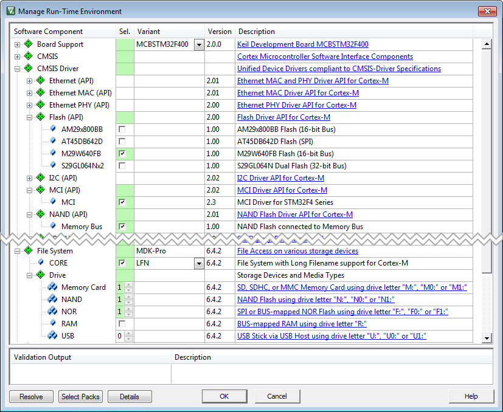
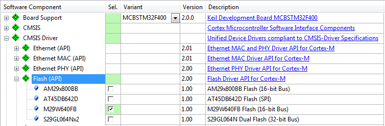
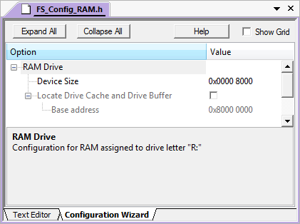
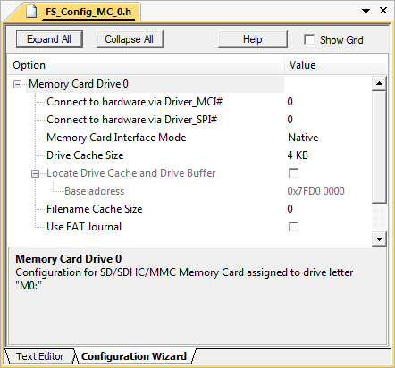
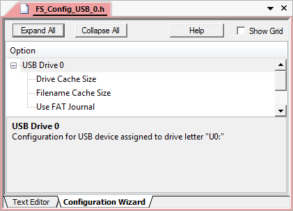
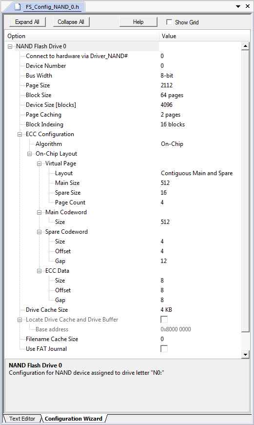
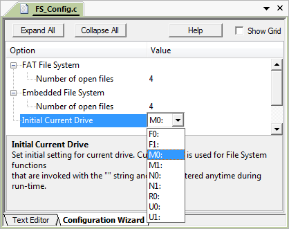
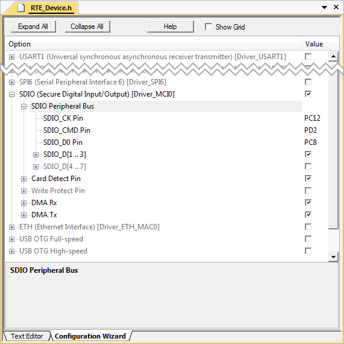
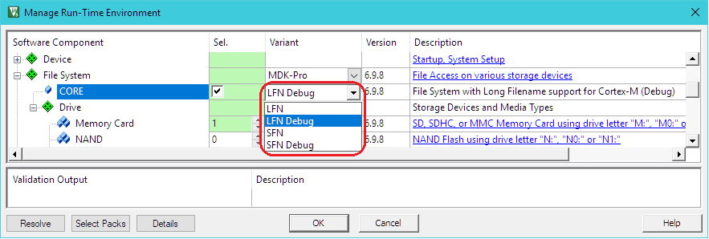
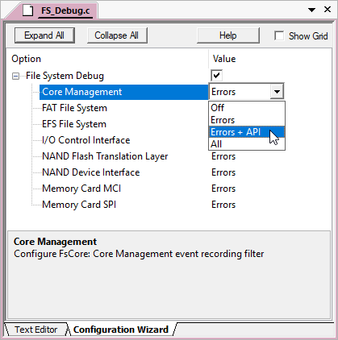

The steps to create a microcontroller application that uses the File System are:
- Select RTE Components along with other components that are required for your application.
- Configure the File System.
- Configure the hardware.
- Implement the User Code.
- Debug you application using the built-in mechanisms of the File System Component.
RTE Component Selection
Only a few steps are necessary to complete the RTE Component selection:
- From the File System Component:
- Select File System:CORE that provides the basic functionality required for data storage and access. In the Variant drop-down box you can choose to use the short (SFN) or long filename (LFN) version.
- Select your desired File System:Drive. Using Drives gives more details.
- From the CMSIS Driver Component select an appropriate driver suitable for your drive. Using Drives gives more details.
- From the Device Component:
- Additional device specific drivers may be required according to the validation output.
- From the CMSIS Component:
- Select the CMSIS:CORE to provide the core interface to the processor.
- Select a suitable CMSIS:RTOS that is a required for the File System Component.

RTE Component for File System
Using Drives
The section Drives, Memory Devices and Drivers shows the relationship between drive - memory device - and driver/interface.
NOR Flash Drive
For using a NOR Flash drive, a driver is required, which encapsulates either the Memory Bus interface or SPI (in which case an driver is required in addition):
- Set File System:Drive:NOR to at least '1' to use a NOR Flash drive (independently if it is using a memory bus or SPI interface).
- From the CMSIS Driver Component, select an appropriate Flash (API) device. If your NOR Flash uses an SPI interface, select SPI (API) additionally.
If your NOR Flash device is not listed, use one of the examples as a reference to implement a driver for your specific device:
- AM29x800BB/M29W640FB (Flash with 16-bit memory bus interface)
- S29GL064Nx2 (Flash with 32-bit memory bus interface)
- AT45DB642D (Flash with SPI interface using an SPI driver)

Flash (API) Drivers shipped with the Middleware Component
Configure the driver-hardware relationship using the FS_Config_NOR_n.h file:

NOR Flash Drive Configuration File
- Note
- General System Resource Configuration requirements apply.
RAM Disk Drive
To enable a RAM disk drive, select File System:Drive:RAM.
Set the drive characteristics in the FS_Config_RAM.h file:

RAM Disk Configuration File
- Note
- General System Resource Configuration requirements apply.
Memory Card Drive
Memory cards can be connected to a microcontroller device either using an SD/MMC bus mode (MCI) or an SPI bus mode.
- Set File System:Drive:Memory Card to at least '1'.
- From the CMSIS Driver Component, select MCI (API) or SPI (API), depending on the actual connection of the card drive to the microcontroller.
Set the drive characteristics in the FS_Config_MC_n.h file:

Memory Card Drive Configuration File
- Note
- If your microcontroller device does not have a CMSIS Driver for the MCI (API) or SPI (API), you can try to develop your own one based on the documentation.
- The page Memory Card Control Layer lists all supported memory card types and gives further details on how to use these cards.
- General System Resource Configuration requirements apply.
USB Flash Drive
- Set File System:Drive:USB to at least '1'.
- From the USB Component, please select the USB:CORE, set USB:Host to '1', and select USB:Host:MSC.
- From the CMSIS Driver component, select the appropriate USB driver from USB Host (API).
Set the drive characteristics in the FS_Config_USB_n.h file:

USB Host Mass Storage Class Drive Configuration File
- Note
- If your microcontroller device does not have a CMSIS Driver for the USB Host (API), you can try to develop your own one based on the documentation.
- General System Resource Configuration requirements apply.
NAND Flash Drive
- Set File System:Drive:NAND to at least '1'.
- From the CMSIS Driver component, select the appropriate NAND driver from NAND (API).
Set the drive characteristics in the FS_Config_NAND_n.h file:

NAND Flash Drive Configuration File
- Note
- If your microcontroller device does not have a CMSIS Driver for the NAND (API), you can try to develop your own one based on the documentation.
- The page NAND Flash Translation Layer describes additional features specific to these devices.
- Using a NAND (API) driver, you can use any NAND Flash device with an 8-/16-bit memory bus interface for data storage.
- NAND Flashes with SPI interface (Serial NAND) are currently not supported by the File System Component.
- General System Resource Configuration requirements apply.
File System Configuration
The File System configuration file FS_Config.c contains settings for the amount of files that can be open at the same time and the initial current drive which needs to be set according to the drives that have been selected:

File System Configuration File
If the Initial Current Drive is not configured correctly, the project will not build. The File System Component will flag this with an error message:
C:\Keil_v5\ARM\PACK\Keil\MDK-Middleware\7.0.0\FileSystem\Include\fs_config.h(178): error: #35:
#error directive: "Initial Current ::File System:Drive is not enabled"
#error "Initial Current ::File System:Drive is not enabled"
Hardware Configuration
As the file system is not bound to a special type of hardware, you need to configure the necessary drivers according to the requirements of your target device. This configuration is done in the RTE_Device.h configuration file:

Hardware Configuration Example using RTE_Device.h
- Note
- Consult the device's user manual or hardware reference guide for more details.
System Resource Configuration
For proper operation, the File System Component requires some system configuration settings. The requirements are:
- Minimum heap size of 512 + 96 Bytes for each opened file. If you want to be able to have three files open at the same time, you need to set a heap size of at least 3 * (512+96) Bytes = 1824 Bytes. This can be configured in the device's file (
Heap_Size).
- As the File System Component is not creating any additional threads, you need to add thread stack size to the calling thread. This calling thread can be the main thread, a thread with a default stack size or a thread with a user provided stack size. Changing the size for these threads can be done in the file.
- Each opened file is protected with a mutex in order to ensure thread-safe operation. When working with file functions from the standard C library, you need to ensure enough mutex objects available for the file stream operations in the standard library system. File System component's Resource Requirements section explains how to determine the right setting in detail. Adjusting the number of mutex objects available for standard library system can be done in the file.
For more information, check the File System component's Resource Requirements section.
User Code Implementation
All available functions are documented in the Reference section of the File System Component. These routines can be adapted to the needs of the microcontroller application, in case more functionality is needed.
Debugging
File System Component is distributed in library form and doesn't allow direct code debug. However it can be easily configured to generate debug events and provide dynamic visibility to the component operation.
Following variants can be selected for the File System:CORE software component in the Manage Run-Time Environment window:
- LFN/SFN Debug: these variants support event annotations for the and make it very easy to analyze the internal operation of the File System Component during application debug. Event Recorder Support below explains how to configure and use this variant.
- LFN/SFN Release: these variants do not include additional debugging code. Use these variants when deploying the application.
The figure below shows selection of the LFN Debug variant as an example.

The Debug Events describes the events implemented in the File System Component.
Event Recorder Support
is a powerful tool that provides visibility to the dynamic execution of the program.
The File System Component generates a broad set of Debug Events for the Event Recorder and implements required infrastructure to interface with it.
To use the Event Recorder it is required to create an image with event generation support. The necessary steps are:
- : in the RTE management dialog select the Debug variant for the target File System:CORE software component.
- : in the RTE management dialog enable the software component Compiler:Event Recorder.
- Ensure that Event Recorder is initialized preferably by if CMSIS-RTOS2 RTX v5 is used, or alternatively by calling the function in the application code.
- Event Recorder Configuration: if necessary, adjust default Event Recorder configuration.
- Build the application code, download it to the target hardware and start debug session.
Now, when the File System generates event information, it can be viewed in the .
Event Recorder Configuration
This section describes the configuration settings for the Event Recorder. The usage requires the debug variant of the File System:CORE software component; refer to Event Recorder Support for more information.
File System Event Generation Configuration
Selecting the File System:CORE debug variant will add the file FS_Debug.c to your project. Use this file to set the event generation configuration for File System core and drivers separately.

FS_Debug.c file for event generation configuration
The following settings are available for event generation configuration of each module:
- Off means no events will be generated by the module
- Errors means only error events will be generated by the module
- Errors + API means error and API call events will be generated by the module
- All means all available events will be generated by the module. Besides error and API call events, this contains operation and detailed events.
Event IDs
The file system component uses the following event IDs:
| Component | Event ID |
| FsCore | 0x80 |
| FsFAT | 0x81 |
| FsEFS | 0x82 |
| FsIOC | 0x83 |
| FsNFTL | 0x84 |
| FsNAND | 0x85 |
| FsMcMCI | 0x86 |
| FsMcSPI | 0x87 |